# obstacle avoidance ## **Design of Autonomous Systems** ### csci 6907/4907-Section 86 ### Prof. **Sibin Mohan** --- so far... --- methods to **detect** and **identify** objects 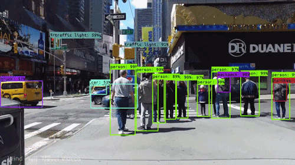 --- main goal → **do not collide** with objects in our path 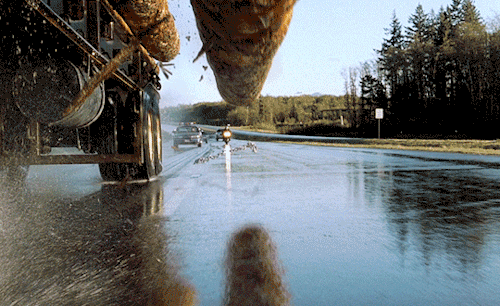 --- two ways to achieve this goal --- two ways to achieve this goal <div class="multicolumn"> <div> <br> **stopping** 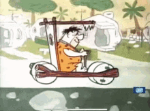 </div> <div> <br> **alternate paths** <img src="img/object/avoidance/racecar_overtake.gif" height="500"> </div> </div> --- ### obstacle avoidance --- ### obstacle avoidance > capability of robot or autonomous system to **detect and circumvent obstacles** in its path to reach a **predefined destination** --- simplest way... --- simplest way... ### use the **sensors** --- ### use the **sensors** - actively react to obstacles --- ### use the **sensors** - actively react to obstacles - recalculate new paths --- ### use the **sensors** <br> <div class="multicolumn"> <div> <br> - actively react to obstacles - recalculate new paths </div> <div> </div> </div> --- **three simple steps**: --- **three simple steps**: - sense --- **three simple steps**: - sense - "think" --- **three simple steps**: - sense - "think" - act Note: - inputs → distances of objects and provide the robot with data about its surroundings enabling it to detect obstacles and calculate their distances. The robot then adjusts its trajectory to navigate around obstacles while trying to reach its destination. This can be carried out in real-time --- **three simple steps**: - sense - "think" - act works in "real-time" --- difficult in complex situations... --- difficult in complex situations... _e.g.,_ autonomous car in urban environmen --- **contemporary** obstacle detection methods --- **contemporary** obstacle detection methods - reactive strategies - global planners - machine-learning based methods --- obstacle avoidance → overlaps with the path planning --- obstacle avoidance → overlaps with the path planning - artificial potential field (APF) - A* and D* searches - RRT --- obstacle avoidance → overlaps with the path planning - artificial potential field (APF) - A* and D* searches - RRT their main goal → find paths through obstacle fields --- <!-- .slide: data-background="white" --> consider weighted A* example: <img src="img/object/avoidance/Weighted_A_star_with_eps_5.gif" height="500"> --- let's look at some **obstacle avoidance algorithms** --- ### Classical/Geometric Methods --- ### Classical/Geometric Methods **track the geometry** using "physics-based" concepts (_e.g.,_ APF) --- ### Classical/Geometric Methods **track the geometry** using "physics-based" concepts (_e.g.,_ APF) <br> ### [Vector-Field Histogram (VFH)](https://ieeexplore.ieee.org/stamp/stamp.jsp?tp=&arnumber=88137) --- ### [Vector-Field Histogram (VFH)](https://ieeexplore.ieee.org/stamp/stamp.jsp?tp=&arnumber=88137) - build a **histogram of obstacle densities** --- ### Vector-Field Histogram (VFH) - build a **histogram of obstacle densities** - choose **low-density paths** --- ### Vector-Field Histogram (VFH) 1. identify obstacles → based on range sensor readings 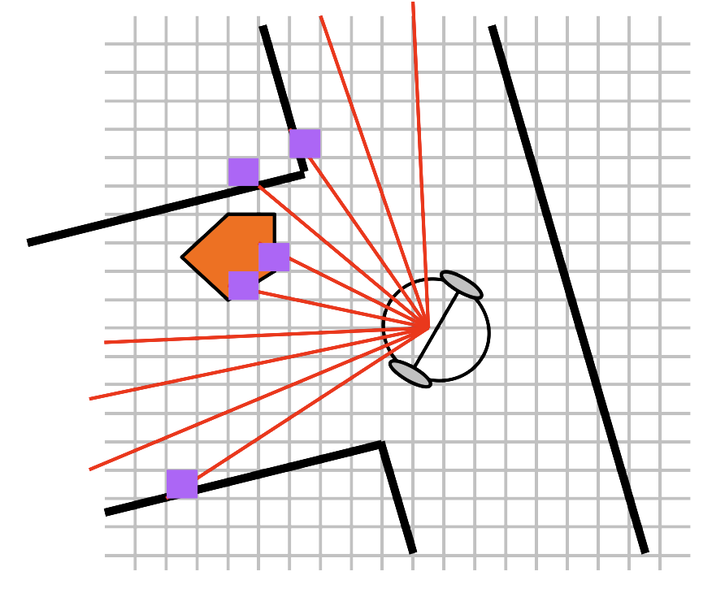 --- ### Vector-Field Histogram (VFH) 2. compute **polar density histograms** <br> <br> 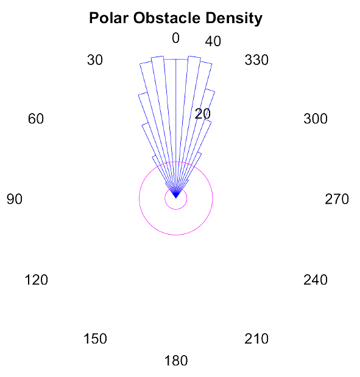 --- ### Vector-Field Histogram (VFH) 2. compute **polar density histograms** <br> <br> identify obstacle location/proximity --- ### Vector-Field Histogram (VFH) 3. convert to **binary histograms** <br> <br> 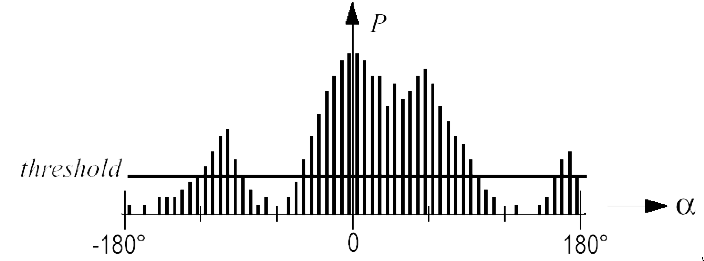 --- ### Vector-Field Histogram (VFH) 3. convert to **binary histograms** <br> <br> indicates **valid steering directions** for robot --- read the [original paper](https://ieeexplore.ieee.org/stamp/stamp.jsp?tp=&arnumber=88137) and [more details](https://web.eecs.utk.edu/~leparker/Courses/CS594-fall08/Lectures/Oct-21-Obstacle-Avoidance-I.pdf) --- other **geometric approaches** → [dynamic window approach](https://www.ri.cmu.edu/pub_files/pub1/fox_dieter_1997_1/fox_dieter_1997_1.pdf) --- other **geometric approaches** → [dynamic window approach](https://www.ri.cmu.edu/pub_files/pub1/fox_dieter_1997_1/fox_dieter_1997_1.pdf) - samples **velocity space** --- other **geometric approaches** → [dynamic window approach](https://www.ri.cmu.edu/pub_files/pub1/fox_dieter_1997_1/fox_dieter_1997_1.pdf) - samples **velocity space** - selects **safe** trajectories - based on dynamic constraints --- other **geometric approaches** → [dynamic window approach](https://www.ri.cmu.edu/pub_files/pub1/fox_dieter_1997_1/fox_dieter_1997_1.pdf) - samples **velocity space** - selects **safe** trajectories - based on dynamic constraints [read the textbook](https://autonomy-course.github.io/textbook/autonomy-textbook.html#classicalgeometric-methods) for more details and references --- ### Model Predictive Control (MPC) --- ### Model Predictive Control (MPC) - advanced **process control** --- ### Model Predictive Control (MPC) - advanced **process control** - while **satisfying a set of constraints** --- ### Model Predictive Control (MPC) optimize **current timeslot** → accounting for **future timeslots** --- ### Model Predictive Control (MPC) optimize **current timeslot** → accounting for **future timeslots** - optimizing **finite time-horizon** --- ### Model Predictive Control (MPC) optimize **current timeslot** → accounting for **future timeslots** - optimizing **finite time-horizon** - only implementing the current timeslot --- ### Model Predictive Control (MPC) optimize **current timeslot** → accounting for **future timeslots** - optimizing **finite time-horizon** - only implementing the current timeslot - optimizing **repeatedly** --- ### Model Predictive Control (MPC) <br> 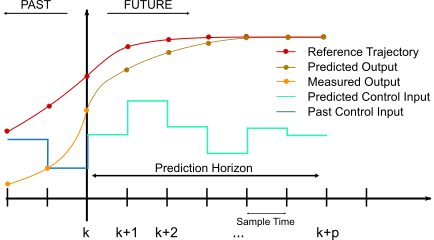 --- ### Model Predictive Control (MPC) <br> can **predict future events** → and react accordingly --- at time, $t$, --- at time, $t$, - current plant state is sampled --- at time, $t$, - current plant state is sampled - cost minimizing control strategy is computed* (* numerical minimization algorithm) --- at time, $t$, - current plant state is sampled - cost minimizing control strategy is computed - for a relatively short **future** time horizon, $[t+T]$ --- explore state trajectories → emanating from current state --- explore state trajectories → emanating from current state find **cost-minimizing control strategy*** → until time $[t+T]$ --- explore state trajectories → emanating from current state find **cost-minimizing control strategy*** → until time $[t+T]$ <br> (* using [Euler–Lagrange equations](https://en.wikipedia.org/wiki/Euler–Lagrange_equation)) --- once control strategy is found... --- once control strategy is found... - only **first step is implemented** --- once control strategy is found... - only **first step is implemented** - plant state → **sampled again** --- once control strategy is found... - only **first step is implemented** - plant state → **sampled again** - calculations **repeated** → starting from new current state --- once control strategy is found... - only **first step is implemented** - plant state → **sampled again** - calculations **repeated** → starting from new current state - yields a **new control** and **new predicted state path** --- prediction horizon → keeps being shifted forward "**receding horizon control**" --- MPC is **not** optimal shows very good results in practice --- ### MPC for obstacle avoidance --- ### MPC for obstacle avoidance - MPC → relies on **dynamic models** of process --- ### MPC for obstacle avoidance - MPC → relies on **dynamic models** of process - once model is established → set up **control loop** --- ### MPC for obstacle avoidance - MPC → relies on **dynamic models** of process - once model is established → set up **control loop** 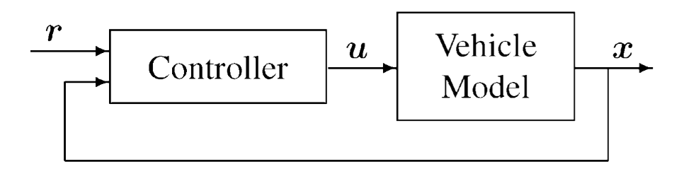 --- ### MPC for obstacle avoidance <br> <div class="multicolumn"> <div> </div> <div> - given a reference command, $\mathbf{r}$ </div> </div> --- ### MPC for obstacle avoidance <br> <div class="multicolumn"> <div> </div> <div> - given a reference command, $\mathbf{r}$ - controller generates high rate **vehicle commands**, $\mathbf{u}$ </div> </div> --- ### MPC for obstacle avoidance <br> <div class="multicolumn"> <div> </div> <div> - given a reference command, $\mathbf{r}$ - controller generates high rate **vehicle commands**, $\mathbf{u}$ - to close the loop with vehicle dynamics </div> </div> --- ### MPC for obstacle avoidance <br> <div class="multicolumn"> <div> </div> <div> - given a reference command, $\mathbf{r}$ - controller generates high rate **vehicle commands**, $\mathbf{u}$ - to close the loop with vehicle dynamics </div> </div> <br> this computes → **predicted state trajectory**, $\mathbf{x}(t)$ --- 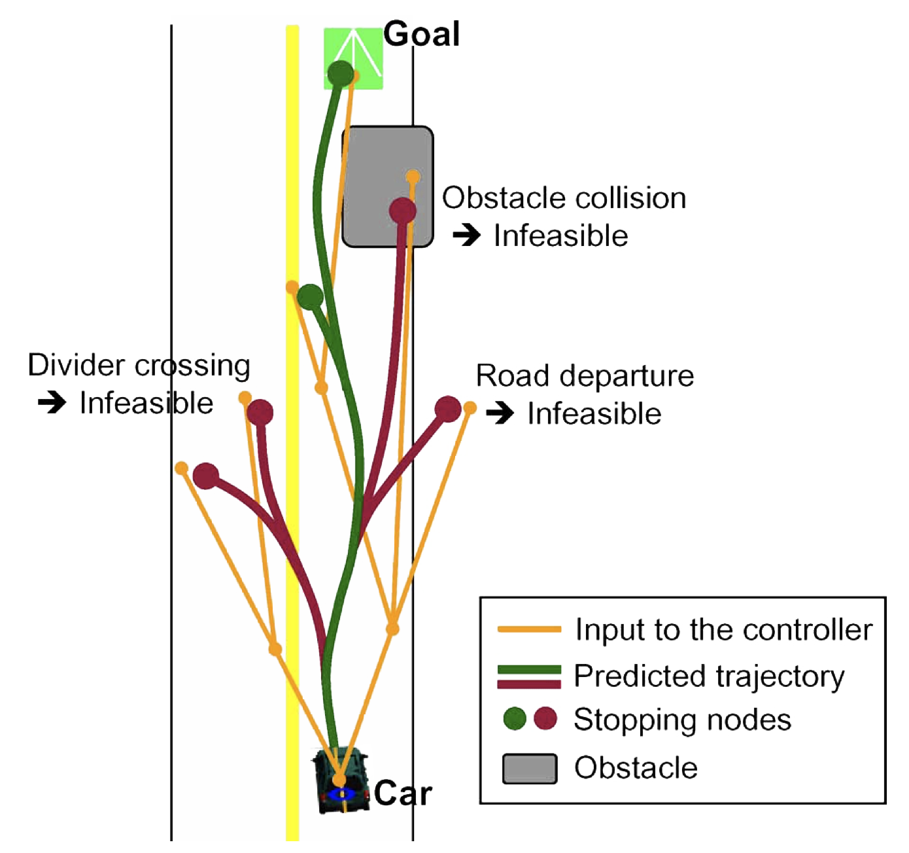 --- feasibility checked against **vehicle and environmental constraints** --- feasibility checked against **vehicle and environmental constraints** _e.g.,_ **rollover** and **obstacle avoidance** constraints --- MPC often works with path planning algorithms (_e.g.,_ RRT) --- MPC often works with path planning algorithms (_e.g.,_ RRT) ### [Closed-Loop RRT (CL-RRT)](https://dspace.mit.edu/bitstream/handle/1721.1/52527/Kuwata-2009-Real-Time%20Motion%20Pla.pdf?sequence=1&isAllowed=y) --- ### Closed-Loop RRT (CL-RRT) - grows a **tree of feasible trajectories** (using RRT) --- ### Closed-Loop RRT (CL-RRT) - grows a **tree of feasible trajectories** (using RRT) - originating from current vehicle state --- ### Closed-Loop RRT (CL-RRT) - grows a **tree of feasible trajectories** (using RRT) - originating from current vehicle state - attempts to reach a **specified goal set** --- ### Closed-Loop RRT (CL-RRT) - grows a **tree of feasible trajectories** (using RRT) - originating from current vehicle state - attempts to reach a **specified goal set** - at end of tree growing phase → **best trajectory** is chosen --- ### Closed-Loop RRT (CL-RRT) - grows a **tree of feasible trajectories** (using RRT) - originating from current vehicle state - attempts to reach a **specified goal set** - at end of tree growing phase → **best trajectory** is chosen - cycle **repeats** --- **quality** of results → depends on **sampling strategies** --- **quality** of results → depends on **sampling strategies** purely random sampling → large numbers of wasted samples --- CL-RRT examples --- CL-RRT examples |situation| details | | |:--------|:--------|:----:| | intersection | vehicle trying to make a right turn | | 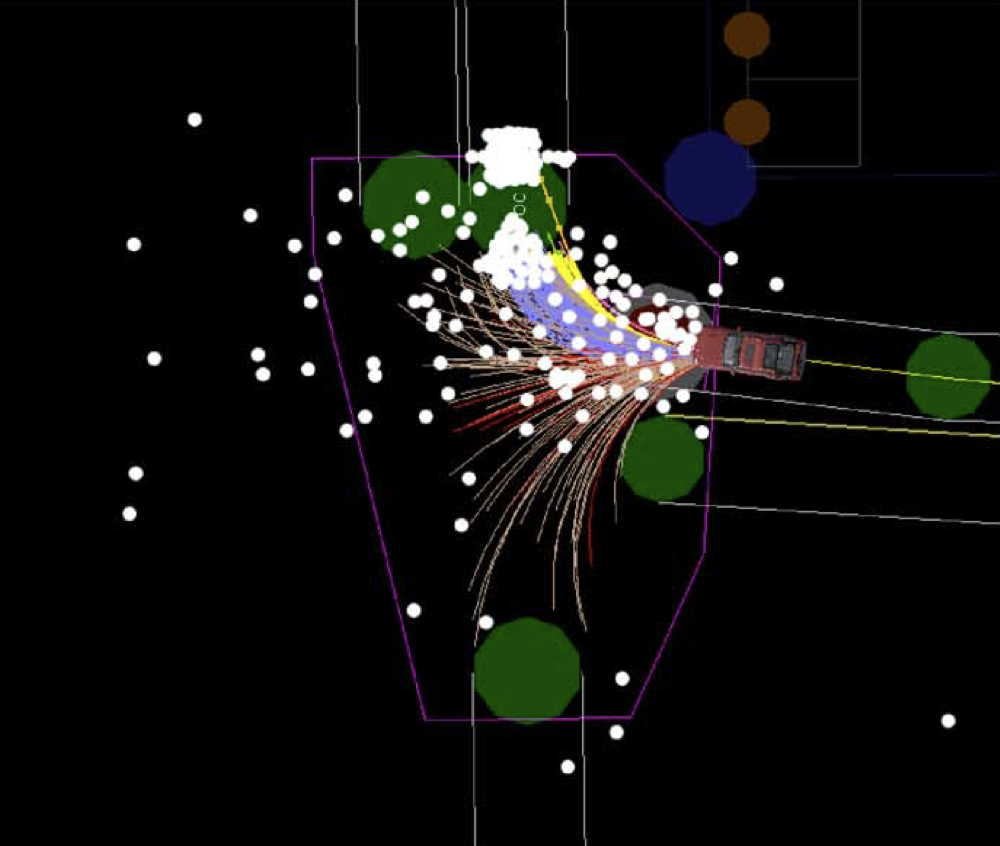 --- CL-RRT examples |situation| details | image| |:--------|:--------|:----:| | intersection | vehicle trying to make a right turn | | | parking lot | goal is center right edge | | 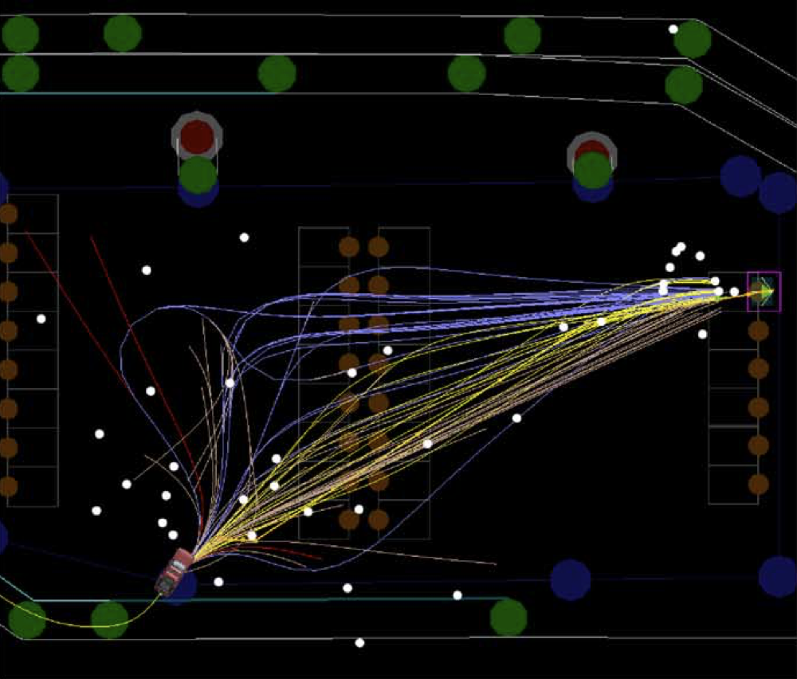 --- CL-RRT examples |situation| details | | |:--------|:--------|:----:| | u-turn| facing (red) road blockage <br> white → blue samples are forward/back maneouvers| | || 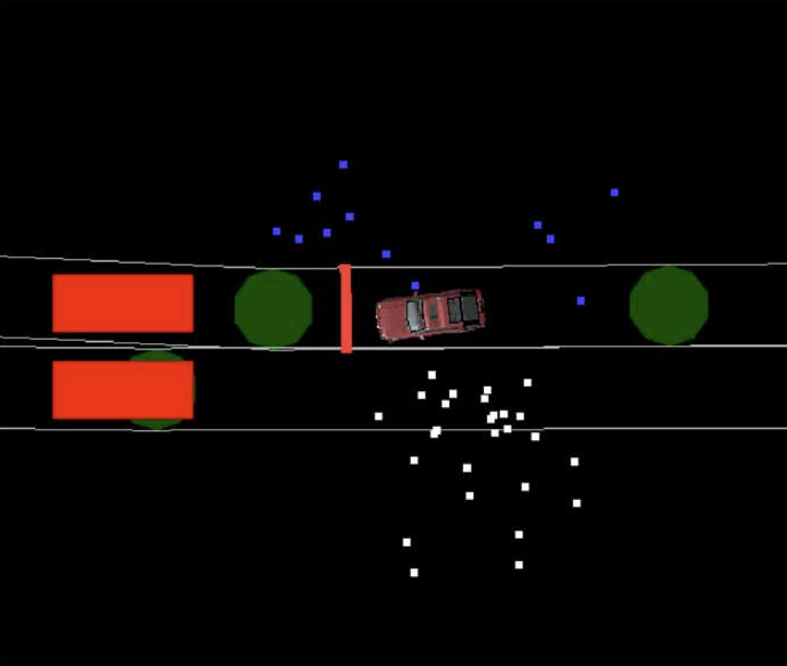 --- CL-RRT examples |situation| details | image| |:--------|:--------|:----:| | intersection | vehicle trying to make a right turn | | | parking lot | goal is center right edge | | | u-turn| facing (red) road blockage <br> white and blues samples are forward/back maneouvers| | || --- read [original CL-RRT paper](https://dspace.mit.edu/bitstream/handle/1721.1/52527/Kuwata-2009-Real-Time%20Motion%20Pla.pdf?sequence=1&isAllowed=y) for more details/references --- ### Learning-Based Methods --- ### Learning-Based Methods - autonomous vehicle can trace paths → **massive amounts of data** --- ### Learning-Based Methods - autonomous vehicle can trace paths → **massive amounts of data** - **adapt quickly** → changing scenarios/environments --- multiple testing stages on **large data sets** of obstacles/environmental conditions --- ML-based solutions can even be **[mapless](https://ieeexplore.ieee.org/stamp/stamp.jsp?tp=&arnumber=8202134)** --- traditional motion planners depend on, - highly precise laser sensor and - obstacle map of navigation environment --- use **asynchronous deep reinforcement learning** --- use **asynchronous deep reinforcement learning** - mapless motion planner → trained end-to-end --- use **asynchronous deep reinforcement learning** - mapless motion planner → trained end-to-end - **without** manually designed features or prior demonstrations! --- what is "**reinforcement learning**"? --- ### [Reinforcement Learning](https://web.stanford.edu/class/psych209/Readings/SuttonBartoIPRLBook2ndEd.pdf) --- ### Reinforcement Learning - computational approach → **learning from interaction** --- ### Reinforcement Learning - computational approach → **learning from interaction** - focused on **goal-directed learning** from interaction --- ### Reinforcement Learning - learning how to **map situations to actions** --- ### Reinforcement Learning - learning how to **map situations to actions** - maximize a **numerical reward signal** --- they are **closed-loop** problems --- they are **closed-loop** problems learning system’s actions influence later inputs --- learner is **not told** which actions to take --- learner is **not told** which actions to take must **discover** which actions yield **most reward** → by trying them out --- actions may affect **future** situations and **all subsequent rewards** --- three most important aspects of RL 1. **closed-loop** 2. **no direct instructions** → what actions to take 3. consequences of actions+reward signals → **extended time periods** Note: One of the challenges → the **trade-off between exploration and exploitation**. To obtain a lot of reward, a reinforcement learning agent must prefer actions that it has **tried in the past and found to be effective** in producing reward. But to discover such actions, it has to **try actions that it has not selected before**. The agent has to exploit what it already knows in order to obtain reward, but it also has to explore in order to make better action selections in the future. --- RL explicitly considers the **whole problem** of, --- RL explicitly considers the **whole problem** of, - a goal-directed agent --- RL explicitly considers the **whole problem** of, - a goal-directed agent - interacting with an uncertain environment --- RL explicitly considers the **whole problem** of, - a goal-directed agent - interacting with an uncertain environment <br> <br> **perfect mapping** to path finding/obstacle detection --- RL → interdisciplinary area of machine learning and optimal control Note: Consider this [example](https://web.stanford.edu/class/psych209/Readings/SuttonBartoIPRLBook2ndEd.pdf): > a mobile robot decides whether it should enter a new room in search of more trash to collect or start trying to find its way back to its battery recharging station. It makes its decision based on the current charge level of its battery and how quickly and easily it has been able to find the recharger in the past. --- typical framing of RL problem <img src="img/object/avoidance/Reinforcement_learning_diagram.svg" width="1100"> --- typical framing of RL problem <br> <div class="multicolumn"> <div> <img src="img/object/avoidance/Reinforcement_learning_diagram.svg" width="800"> </div> <div> <br> <br> - an agent takes actions in an environment </div> </div> --- typical framing of RL problem <br> <div class="multicolumn"> <div> <img src="img/object/avoidance/Reinforcement_learning_diagram.svg" width="800"> </div> <div> <br> <br> - an agent takes actions in an environment - interpreted into **reward** and **state representation** </div> </div> --- typical framing of RL problem <br> <div class="multicolumn"> <div> <img src="img/object/avoidance/Reinforcement_learning_diagram.svg" width="800"> </div> <div> <br> <br> - an agent takes actions in an environment - interpreted into **reward** and **state representation** - fed back to agent </div> </div> --- simplest model for RL → [Markov Decision Process (MDP)](https://math.uchicago.edu/~may/REU2022/REUPapers/Wang,Yuzhou.pdf) --- simplest model for RL → [Markov Decision Process (MDP)](https://math.uchicago.edu/~may/REU2022/REUPapers/Wang,Yuzhou.pdf) optimization models → decision-making where outcomes are random --- simplest model for RL |||| |----|:-----|:----| | $S$ | state space | set of **environment** and **agent states** | --- simplest model for RL |||| |----|:-----|:----| | $S$ | state space | set of **environment** and **agent states** | | $A$ | action space | set of **actions** of agent | --- simplest model for RL |||| |----|:-----|:----| | $S$ | state space | set of **environment** and **agent states** | | $A$ | action space | set of **actions** of agent | | $P_a\left(s, s^{\prime}\right)$| transition probability (at time $t$) | from state $s$ to $s^{\prime}$ under action $a$| <br> $P_a\left(s, s^{\prime}\right)=\operatorname{Pr}\left(S_{t+1}=s^{\prime} \mid S_t=s, A_t=a\right)$ --- simplest model for RL |||| |----|:-----|:----| | $S$ | state space | set of **environment** and **agent states** | | $A$ | action space | set of **actions** of agent | | $P_a\left(s, s^{\prime}\right)$| transition probability (at time $t$) | from state $s$ to $s^{\prime}$ under action $a$| | $R_a\left(s, s^{\prime}\right)$ | immediate reward | after transition from $s$ to $s^{\prime}$ under action $a$ | || --- purpose of RL agent --- purpose of RL agent - learn an optimal (or near-optimal) policy --- purpose of RL agent - learn an optimal (or near-optimal) policy - **maximizes reward function** or other reinforcement signal --- purpose of RL agent - learn an optimal (or near-optimal) policy - **maximizes reward function** or other reinforcement signal - accumulates from immediate rewards --- RL agent interacts with environment → **discrete time steps** --- each time step $t$, --- each time step $t$, - agent receives → current state $S_t$ and reward $R_t$ --- each time step $t$, - agent receives → current state $S_t$ and reward $R_t$ - chooses an action $A_t$ → from set of available actions --- each time step $t$, - agent receives → current state $S_t$ and reward $R_t$ - chooses an action $A_t$ → from set of available actions - subsequently sent to environment --- each time step $t$, - agent receives → current state $S_t$ and reward $R_t$ - chooses an action $A_t$ → from set of available actions - subsequently sent to environment - environment → moves to new state $S_{t+1}$ --- each time step $t$, - agent receives → current state $S_t$ and reward $R_t$ - chooses an action $A_t$ → from set of available actions - subsequently sent to environment - environment → moves to new state $S_{t+1}$ - reward $R_{t+1}$ associated with transition $\left(S_t, A_t, S_{t+1}\right)$ is determined --- main **goal** of RL → **learn a "policy"**, --- main **goal** of RL → **learn a "policy"**, $$ \pi: \mathcal{S} \times \mathcal{A} \rightarrow[0,1], \pi(s, a)=\operatorname{Pr}\left(A_t=a \mid S_t=s\right) $$ --- main **goal** of RL → **learn a "policy"**, $$ \pi: \mathcal{S} \times \mathcal{A} \rightarrow[0,1], \pi(s, a)=\operatorname{Pr}\left(A_t=a \mid S_t=s\right) $$ that **maximizes the expected cumulative reward** --- [textbook](https://autonomy-course.github.io/textbook/autonomy-textbook.html#learning-based-methods) has links to book on RL and MDP --- ### reinforcement learning+Obstacle Detection --- example | (asynchronous) RL --- example | (asynchronous) RL robot → find way through **unfamiliar** terrain --- example | (asynchronous) RL robot → find way through **unfamiliar** terrain 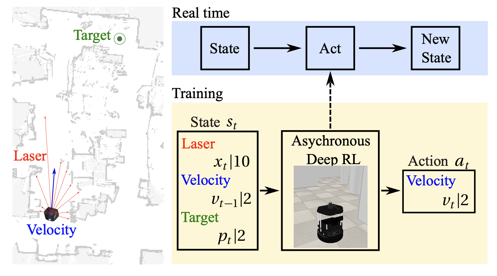 --- ### reinforcement learning+Obstacle Detection comes down to → defining the **right reward function** --- |reward functions|| |:-----|-----| --- |reward functions|| |:-----|-----| |distance **from** obstacle|| --- |reward functions|| |:-----|-----| |distance **from** obstacle|| |speed/angular velocity || Note: -Positive rewards can be given for maintaining a reasonable speed, and negative rewards for excessive angular velocity changes (which might lead to the agent getting stuck or making sharp turns). --- |reward functions|| |:-----|-----| |distance **from** obstacle|| |speed/angular velocity || |collision penalties|| --- |reward functions|| |:-----|-----| |distance **from** obstacle|| |speed/angular velocity || |collision penalties|| |goal reward || --- |reward functions|| |:-----|-----| |distance **from** obstacle|| |speed/angular velocity || |collision penalties|| |goal reward || |time penalty|| || --- |reward functions|reward type| |:-----|-----| |distance **from** obstacle|| |speed/angular velocity || |collision penalties|| |goal reward || |time penalty|| || --- |reward functions|reward type| |:-----|-----| |distance **from** obstacle| **positive** | |speed/angular velocity || |collision penalties|| |goal reward || |time penalty|| || --- |reward functions|reward type| |:-----|-----| |distance **from** obstacle| **positive** | |speed/angular velocity | **positive**/**negative**| |collision penalties|| |goal reward || |time penalty|| || --- |reward functions|reward type| |:-----|-----| |distance **from** obstacle| **positive** | |speed/angular velocity | **positive**/**negative**| |collision penalties| **negative**| |goal reward || |time penalty|| || --- |reward functions|reward type| |:-----|-----| |distance **from** obstacle| **positive** | |speed/angular velocity | **positive**/**negative**| |collision penalties| **negative**| |goal reward | **positive**| |time penalty|| || --- |reward functions|reward type| |:-----|-----| |distance **from** obstacle| **positive** | |speed/angular velocity | **positive**/**negative**| |collision penalties| **negative**| |goal reward | **positive**| |time penalty| **negative**| || --- read the paper, ["Virtual-to-real Deep Reinforcement Learning: Continuous Control of Mobile Robots for Mapless Navigation](https://ieeexplore.ieee.org/stamp/stamp.jsp?tp=&arnumber=8202134) by Tai et al. for earlier example --- ### [imitation Learning](https://arxiv.org/pdf/1604.07316) --- ### [imitation Learning](https://arxiv.org/pdf/1604.07316) learn policies **from human demonstrations** --- ### imitation Learning **automatically learns internal representations** --- ### imitation Learning **automatically learns internal representations** of necessary processing steps --- ### imitation Learning | example --- ### imitation Learning | example - detecting useful road features --- ### imitation Learning | example - detecting useful road features - using **only human steering angles** as training signal! --- high-level process <img src="img/object/avoidance/imitation_learning.example.png" width="1200"> --- high-level process <div class="multicolumn"> <div> <br> <img src="img/object/avoidance/imitation_learning.example.png" width="1200"> </div> <div> - images are fed into a CNN </div> </div> --- high-level process <div class="multicolumn"> <div> <br> <img src="img/object/avoidance/imitation_learning.example.png" width="1200"> </div> <div> - images are fed into a CNN - compute steering command </div> </div> --- high-level process <div class="multicolumn"> <div> <br> <img src="img/object/avoidance/imitation_learning.example.png" width="1200"> </div> <div> - images are fed into a CNN - compute steering command - compare desired command </div> </div> --- high-level process <div class="multicolumn"> <div> <br> <img src="img/object/avoidance/imitation_learning.example.png" width="1200"> </div> <div> - images are fed into a CNN - compute steering command - compare desired command - adjust CNN weights </div> </div> --- high-level process <div class="multicolumn"> <div> <br> <img src="img/object/avoidance/imitation_learning.example.png" width="1200"> </div> <div> - images are fed into a CNN - compute steering command - compare desired command - adjust CNN weights - bring CNN output close to desired output </div> </div> --- high-level process <div class="multicolumn"> <div> <br> <img src="img/object/avoidance/imitation_learning.example.png" width="1200"> </div> <div> - images are fed into a CNN - compute steering command - compare desired command - adjust CNN weights - bring CNN output close to desired output - back propagation → weight adjustment </div> </div> --- once trained → **network generates steering** from video... --- once trained → **network generates steering** from video... ...of a **single center camera**! --- 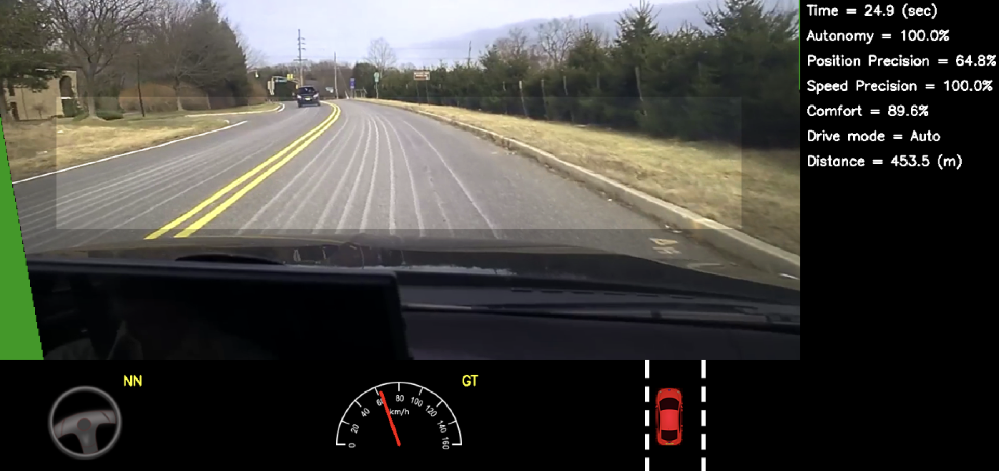 Note: - Screen shot of the simulator in interactive mode. See Section 7.1 for explanation of the performance metrics. The green area on the left is unknown because of the viewpoint transformation. The highlighted wide rectangle below the horizon is the area which is sent to the CNN. --- read the paper, ["end to end learning for self-driving cars"](https://arxiv.org/pdf/1604.07316) for more details --- ### Trajectory Calculations --- ### Trajectory Calculations mathematical functions → estimate a **smooth trajectory** --- ### Trajectory Calculations mathematical functions → estimate a **smooth trajectory** _e.g.,_ [using **sigmoid** functions](https://ieeexplore.ieee.org/document/8519525) → avoid moving car in same lane --- ### Sigmoid functions --- ### Sigmoid functions - **[S-shaped mathematical function](https://en.wikipedia.org/wiki/Sigmoid_function)** --- ### Sigmoid functions - **[S-shaped mathematical function](https://en.wikipedia.org/wiki/Sigmoid_function)** - maps any input value to → output between <scb>0</scb> and <scb>1</scb> --- ### Sigmoid functions <img src="img/object/avoidance/sigmoid.svg" width="1100"> --- most common sigmoid function → logistic function $$ \sigma(x) = \frac{1}{1 + e^{-x}} $$ --- most common sigmoid function → logistic function $$ \sigma(x) = \frac{1}{1 + e^{-x}} = \frac{e^x}{1 + e^x} = 1 - \sigma(-x) $$ --- **key properties** of sigmoid functions --- **key properties** of sigmoid functions <br> - smooth, continuous curve --- **key properties** of sigmoid functions <br> - smooth, continuous curve - output range limited to $(0,1)$ --- **key properties** of sigmoid functions <br> - smooth, continuous curve - output range limited to $(0,1)$ - approaches <scb>0</scb> as $x \rightarrow - \infty$ --- **key properties** of sigmoid functions <br> - smooth, continuous curve - output range limited to $(0,1)$ - approaches <scb>0</scb> as $x \rightarrow - \infty$ - approaches <scb>1</scb> as $x \rightarrow + \infty$ --- **key properties** of sigmoid functions <br> - smooth, continuous curve - output range limited to $(0,1)$ - approaches <scb>0</scb> as $x \rightarrow - \infty$ - approaches <scb>1</scb> as $x \rightarrow + \infty$ - has a derivative that is **always positive** --- **key properties** of sigmoid functions <br> - smooth, continuous curve - output range limited to $(0,1)$ - approaches <scb>0</scb> as $x \rightarrow - \infty$ - approaches <scb>1</scb> as $x \rightarrow + \infty$ - has a derivative that is **always positive** - steepest slope occurs at $x = 0$ --- back to our [trajectory estimation example](https://ieeexplore.ieee.org/document/8519525) --- ### trajectory estimation example avoids vehicles/obstacles → **smooth local modified trajectory** --- ### trajectory estimation example avoids vehicles/obstacles → **smooth local modified trajectory** --- 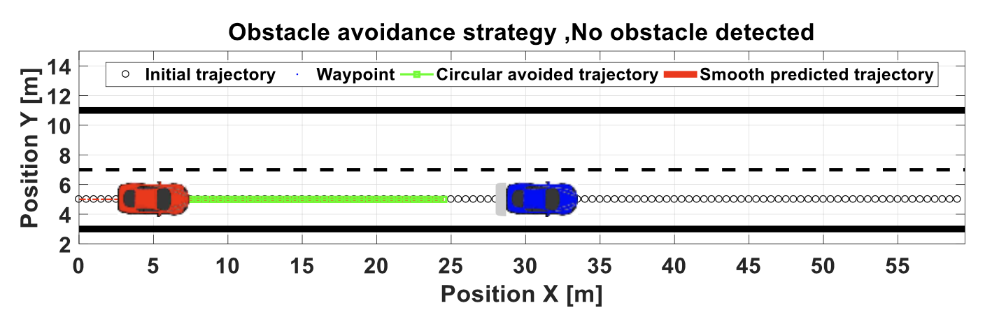 <font style="color:darkred; font-weight:bold">red car</font> (us) approaches <font style="color:blue; font-weight:bold">blue car</font> (obstacle) --- what we want... 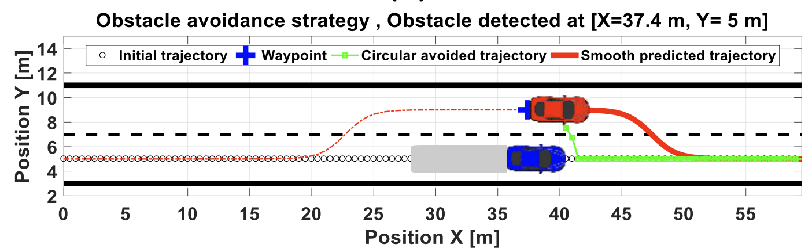 --- solution → a combination of, --- solution → a combination of, - a **parametrized sigmoid function** --- solution → a combination of, - a **parametrized sigmoid function** - a **rolling horizon** → repeatedly solving time-dependant model --- important **constraints** --- important **constraints** - react to obstacles --- important **constraints** - react to obstacles - ensure a **smooth** response/trajectory --- consider following Sigmoid function <br> $$ y(x) = \frac{1}{1 + e^{(-a(x-c))}} $$ --- consider following Sigmoid function $$ y(x) = \frac{1}{1 + e^{(-a(x-c))}} $$ |term|definition| |-----|:----| | $y(x)$| lateral offset of the vehicle | --- consider following Sigmoid function $$ y(x) = \frac{1}{1 + e^{(-a(x-c))}} $$ |term|definition| |-----|:----| | $y(x)$| lateral offset of the vehicle | | $x$ | position in longitudinal direction | --- consider following Sigmoid function $$ y(x) = \frac{1}{1 + e^{(-a(x-c))}} $$ |term|definition| |-----|:----| | $y(x)$| lateral offset of the vehicle | | $x$ | position in longitudinal direction | | $B$ | the "way position", $P3$ <br> to generate obstacle avoidance manoeuvre | --- consider following Sigmoid function $$ y(x) = \frac{1}{1 + e^{(-a(x-c))}} $$ |term|definition| |-----|:----| | $y(x)$| lateral offset of the vehicle | | $x$ | position in longitudinal direction | | $B$ | the "way position", $P3$ <br> to generate obstacle avoidance manoeuvre | | $c$ | modifies the shape of the function | --- consider following Sigmoid function $$ y(x) = \frac{1}{1 + e^{(-a(x-c))}} $$ |term|definition| |-----|:----| | $y(x)$| lateral offset of the vehicle | | $x$ | position in longitudinal direction | | $B$ | the "way position", $P3$ <br> to generate obstacle avoidance manoeuvre | | $c$ | modifies the shape of the function | | $a$ | slope of the sigmoid | || --- shape of sigmoid curvature → for various values of $a$, <br> <div class="multicolumn"> <div> $$ y(x) = \frac{1}{1 + e^{(-a(x-c))}} $$ </div> <div> </div> </div> --- shape of sigmoid curvature → for various values of $a$, <br> <div class="multicolumn"> <div> $$ y(x) = \frac{1}{1 + e^{(-a(x-c))}} $$ </div> <div> 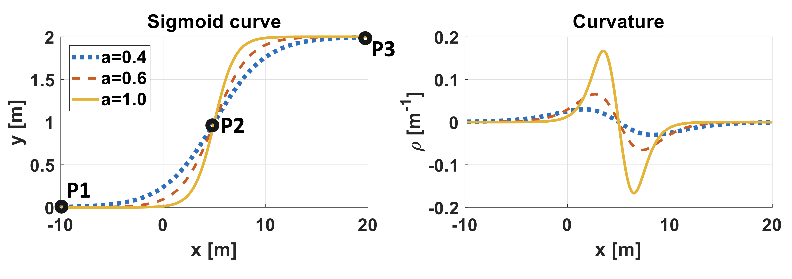 </div> </div> --- get from $P1 \rightarrow P3$, **via** $P2$ --- get from $P1 \rightarrow P3$, **via** $P2$ - inputs → obstacle position and position of vehicle --- get from $P1 \rightarrow P3$, **via** $P2$ - inputs → obstacle position and position of vehicle - lateral offset → calculated based on these parameters --- reference trajectory → calculated **simultaneously** with displacement --- reference trajectory → calculated **simultaneously** with displacement we need to **constantly recalculate** as car/obstacle are moving --- **execution time** is important! --- **execution time** is important! solution calculated/implemented in really short amount of time --- high level process --- high level process 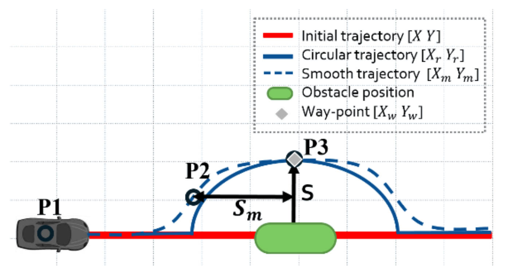 --- high level process <br> <div class="multicolumn"> <div> </div> <div> 1. **circular area** around obstacle </div> </div> --- high level process <br> <div class="multicolumn"> <div> </div> <div> 1. **circular area** around obstacle - compute **safe** region </div> </div> --- high level process <br> <div class="multicolumn"> <div> </div> <div> 1. **circular area** around obstacle - compute **safe** region 2. sigmoid functions → **trajectory** - based on circular region </div> </div> --- high level process <br> <div class="multicolumn"> <div> </div> <div> 1. **circular area** around obstacle - compute **safe** region 2. sigmoid functions → **trajectory** - based on circular region - **smooth**/**safe** transitions </div> </div> --- high level process <br> <div class="multicolumn"> <div> </div> <div> 1. **circular area** around obstacle - compute **safe** region 2. sigmoid functions → **trajectory** - based on circular region - **smooth**/**safe** transitions </div> </div> ||| |----|:----| | $S$ | desired **lateral** safety distance | --- high level process <br> <div class="multicolumn"> <div> </div> <div> 1. **circular area** around obstacle - compute **safe** region 2. sigmoid functions → **trajectory** - based on circular region - **smooth**/**safe** transitions </div> </div> ||| |----|:----| | $S$ | desired **lateral** safety distance | | $S_m$ | **longitudinal** safety distance | || --- "**horizon planning approach**" → compute paths --- "**horizon planning approach**" → compute paths - dividing drivable space into convex regions --- "**horizon planning approach**" → compute paths - dividing drivable space → into convex regions - trajectory of each region → computed as vehicle moves forward --- **trajectory calculation** | incremental steps --- **trajectory calculation** | incremental steps 1. approaching another car/obstacle → too far away to be a problem --- **trajectory calculation** | incremental steps 2. object detected --- **trajectory calculation** | incremental steps 2. object detected - safety circle calculated --- **trajectory calculation** | incremental steps 2. object detected - safety circle calculated - smooth trajectory calculated --- **trajectory calculation** | incremental steps 2. object detected - safety circle calculated - smooth trajectory calculated 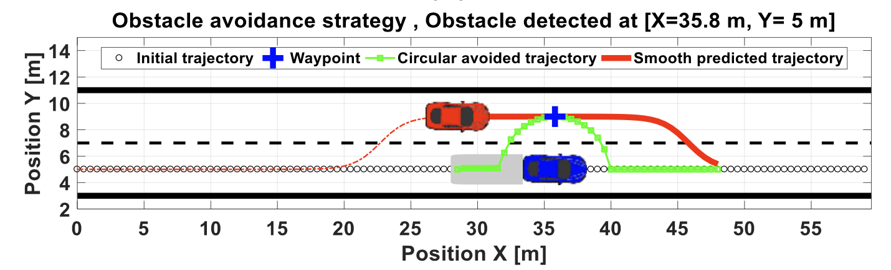 --- our <font style="color:darkred; font-weight:bold">red</font> car → moves to **new trajectory** --- **note:** the obstacle (<font style="color:blue; font-weight:bold">blue</font> car) has moved forward calculations should account for this --- **trajectory calculation** | incremental steps 3. **move past obstacle** --- **trajectory calculation** | incremental steps 3. **move past obstacle** - start to move back to original path/lane --- **trajectory calculation** | incremental steps 3. **move past obstacle** - start to move back to original path/lane - complete the trajectory --- **trajectory calculation** | incremental steps 3. **move past obstacle** - start to move back to original path/lane - complete the trajectory --- this is a **local** method --- this is a **local** method can work a global path planning/obstacle avoidance method --- read full paper, ["smooth obstacle avoidance path planning for autonomous vehicles](https://ieeexplore.ieee.org/document/8519525) for all details